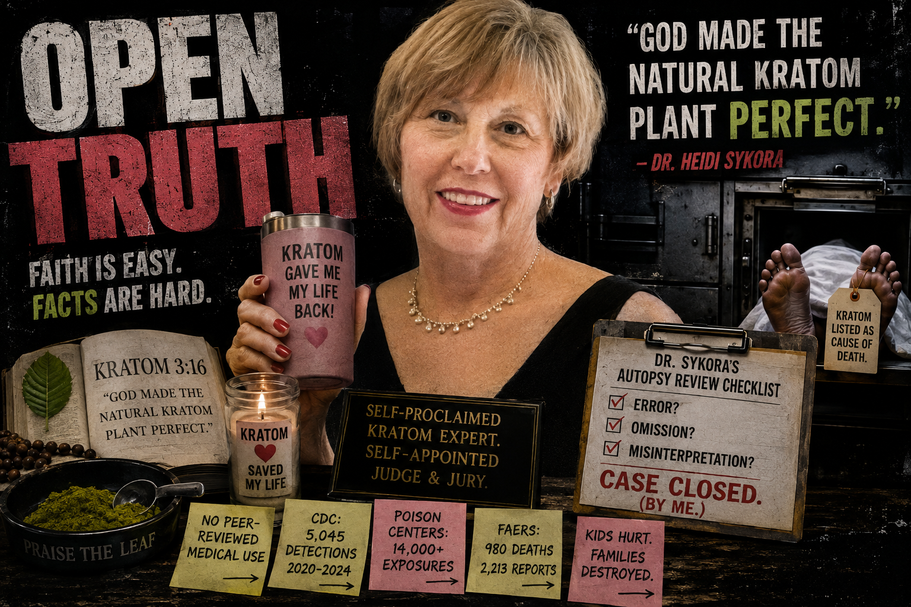
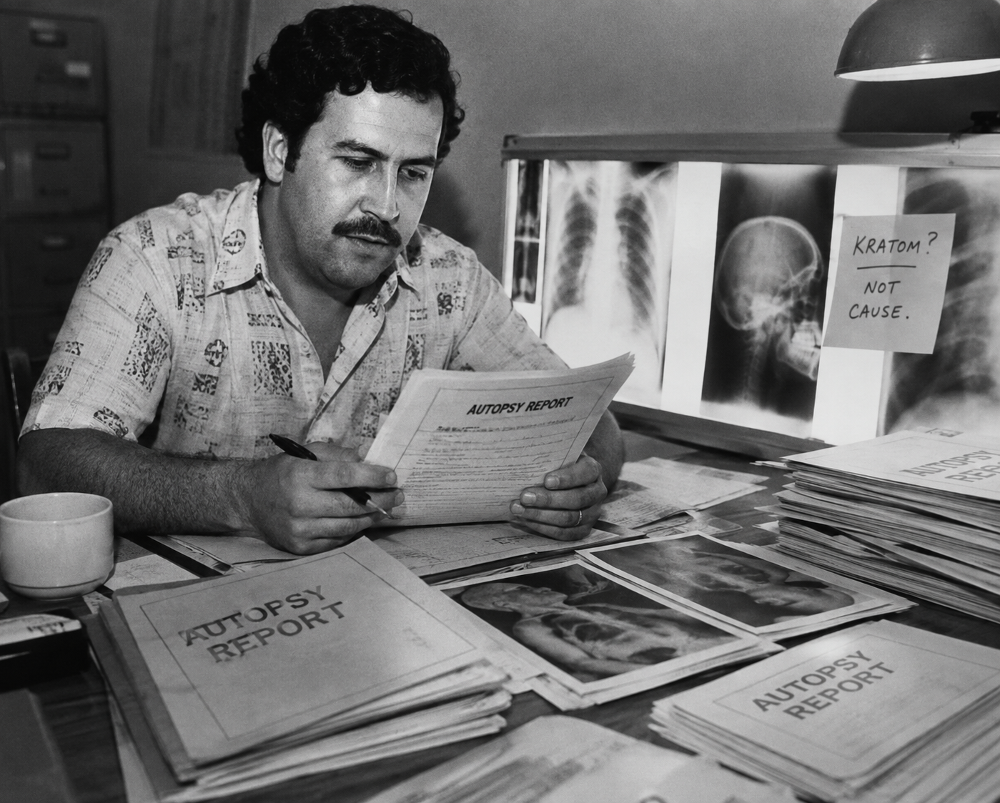

Before Dr. Heidi Sykora began reviewing autopsy reports and questioning medical examiners' conclusions about kratom deaths, she gave lawmakers a remarkably useful disclosure about her own relationship with kratom.
She loves it.
Not academically. Not hypothetically. Personally.
In written testimony opposing North Dakota's proposed scheduling of kratom, Sykora described serious chronic illnesses and difficulty tolerating conventional medications. Oxycodone caused dizziness, confusion and fatigue. Acetaminophen made her sleepy. Naproxen caused gastrointestinal problems. Then her son introduced her to kratom.
What followed wasn't exactly cautious clinical language.
She said it reduced her pain, helped her exercise and allowed her to enjoy her grandchildren. She credited it with taking her from being a "spectator" in life to being a participant.
And then came the sentence that really puts the clinical in clinical assessment:
Apparently the Almighty has entered the peer-review process.
By March 2026, Sykora appeared before the Ohio House Agriculture Committee in support of HB 587.
This time she emphasized another side of her résumé: Doctor of Nursing Practice, retired nurse practitioner and healthcare executive, and volunteer Chief Scientific Officer of the International Plant and Herbal Alliance.
She told legislators:
She also emphasized that she had "no financial interest in kratom."
That's worth knowing.
But no financial interest isn't the same thing as no personal interest.
This is the same person who called kratom a miracle, said it restored her life, and described traveling weekly between Wisconsin and Illinois because Wisconsin prohibited kratom while Illinois allowed it.
That's considerably more than forgetting to disclose that you occasionally enjoy the tea.
On June 2, 2026, Sykora appeared at an American Kratom Association Congressional briefing in Washington, D.C.
According to the AKA's own account, she examined autopsy and toxicology reports and raised alleged "errors, omissions, and misinterpretations" in cases attributed to natural kratom.
Consider the progression:
That's quite a journey.
Apparently the kratom came with a forensic-pathology expansion pack.
And this is where policymakers should separate two questions that advocates would probably prefer remain married:
This isn't an insult. It's a job description.
Sykora has legitimate healthcare credentials.
She is not a forensic pathologist.
Forensic pathologists are physicians specifically trained to determine cause and manner of death by integrating the autopsy, histology, toxicology, medical history, scene investigation and circumstances of death.
Reading an autopsy report afterward can raise questions.
It doesn't confer the specialty of the physician who performed the forensic investigation.
And finding another substance on toxicology doesn't automatically clear kratom.
Postmortem toxicology isn't Where's Waldo?
You don't find fentanyl three pages later and yell:
Here's where Sykora's story gets particularly interesting.
When kratom helps her, her personal experience apparently carries substantial evidentiary weight.
But when kratom appears in somebody else's death investigation, suddenly everybody put on your lab coats.
Funny how rigorous science always seems to arrive just in time to defend the leaf.
Sykora herself told Ohio legislators that rigorous data evaluation is part of her professional background.
Excellent.
Use the same ruler at both ends of the autopsy table.

Would you call Pablo Escobar an independent reviewer of cocaine-related autopsies?
Of course not.
And no, Heidi Sykora isn't Pablo Escobar. That's not the comparison.
The comparison is bias.
When someone has an extraordinary personal investment in a substance, that investment doesn't disappear because an autopsy report lands on the desk.
Maybe Sykora found genuine mistakes.
Medical examiners aren't infallible.
So test her claims.
Give the complete cases to independent, board-certified forensic pathologists and forensic toxicologists with no position in the kratom debate. Publish the methodology. Publish the disagreements. Publish the results.
If the original determinations were wrong, demonstrate it.
That's scientific review.
What's considerably harder to sell as independence is a passionate kratom consumer and plant-access advocate challenging autopsy conclusions after previously telling lawmakers:
Heidi Sykora is entitled to believe kratom saved her life.
She's entitled to advocate for it.
She's entitled to question an autopsy.
And she might even be right about individual cases.
But Congress is equally entitled to know who is doing the questioning and what she has already told legislators about the substance she's defending.
The documents below are presented so readers can review Sykora's statements in their original context. Descriptions summarize the contents; readers are encouraged to examine the underlying records directly.